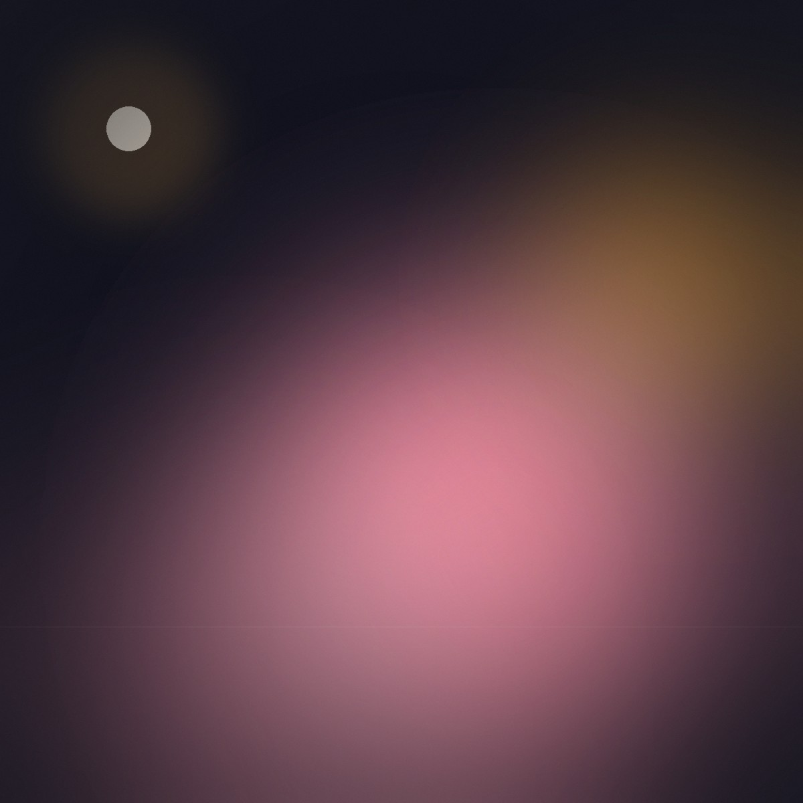
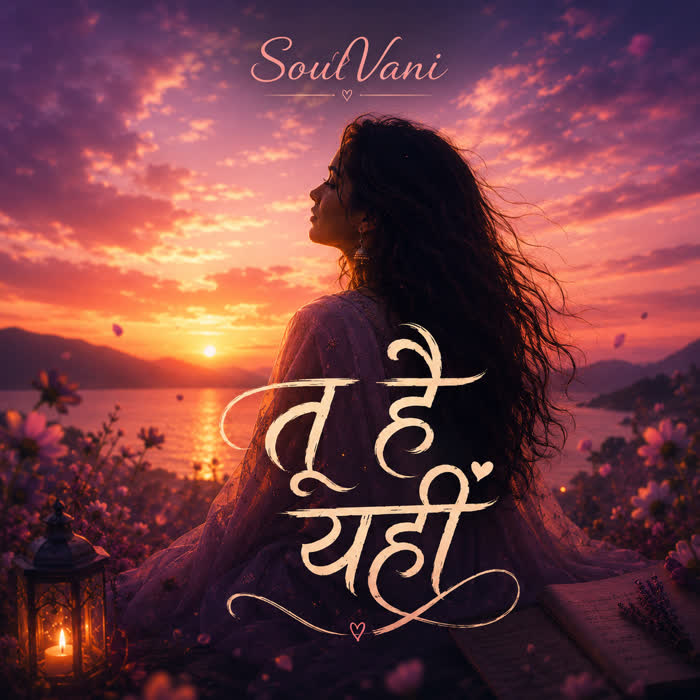
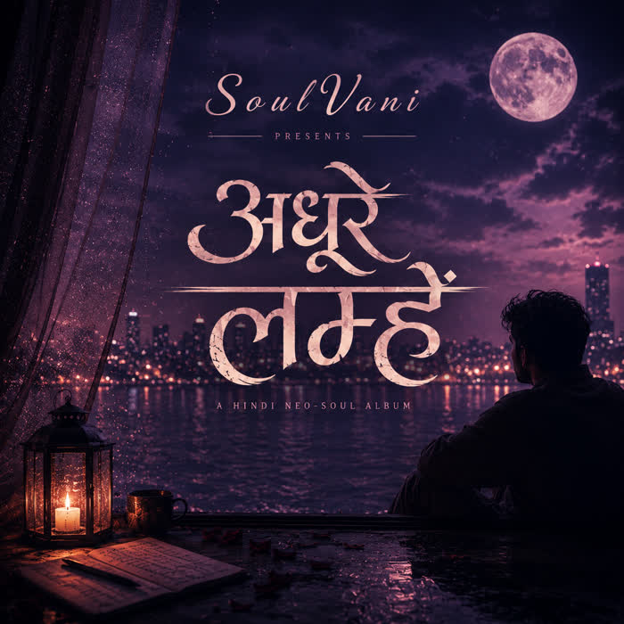

A Hindi neo-soul project for slow listeners. Three albums of restless love, twilight longing, and unfinished midnight moments — press play for a thirty-second glimpse of any song.

The restless first love — pink skies, mischievous hearts. Nine songs of love arriving before it's invited.

The presence in absence — twilight, lavender, longing. Eight songs sung to a room that still smells of someone.

The unfinished moments — neo-soul for cities at midnight. Eight songs for the drive home after everyone else has said goodnight.